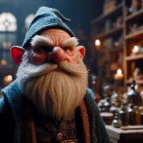

Tozu
Picture comes soon

This gnome was born in the year 1129 DR. Tozu has a odd and complicated family live. From a young age he was an outcast with his body changing now and then. As he has a trait of a Changeling. Making his body shift between a gnome and goblin. Even though his body changes his personality stays the same. His dad was always disappointed his odd behavior. His younger brother does not have that physicals oddity but is more mentily insane.
Tozu was a quick learner but his practice always was lacking behind. Within 150 years he managed to master the weave and magic. His practical knowledge came when he was around the age of 200. He had to fight his coworkers as they ended up fighting Hadar form the 13.
Tozu has friends all over the world and planes. Currently in the year 1506 DR he's quite fond of a group called the Misfits. Its an adventuring party he cherishes but does not show. As he know the job has its dangers but still hopes they live a fulfilled live for their short span. Though he rarely has contact with people he knows from another plane.
Currently Tozu live in Harrowdale. He has a magic shop there with his magnificent mansion as backroom for storage and where he sleeps.
Secrets
No one knows but Tozo is a man that experiments and founded his own school of magic. Due to the power he found in manipulating light he discovered things most people would class unnatural. He called the magic Lumiflection. As its based on light, the absence of light and manipulation of it.